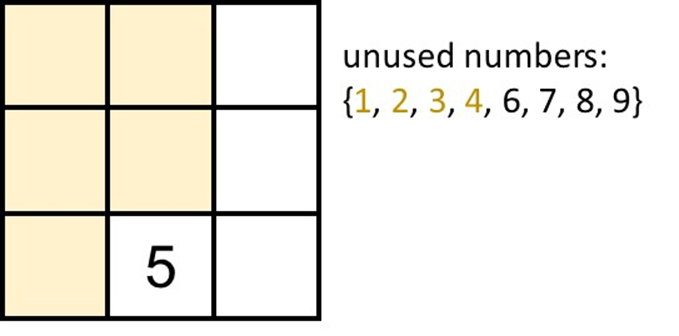
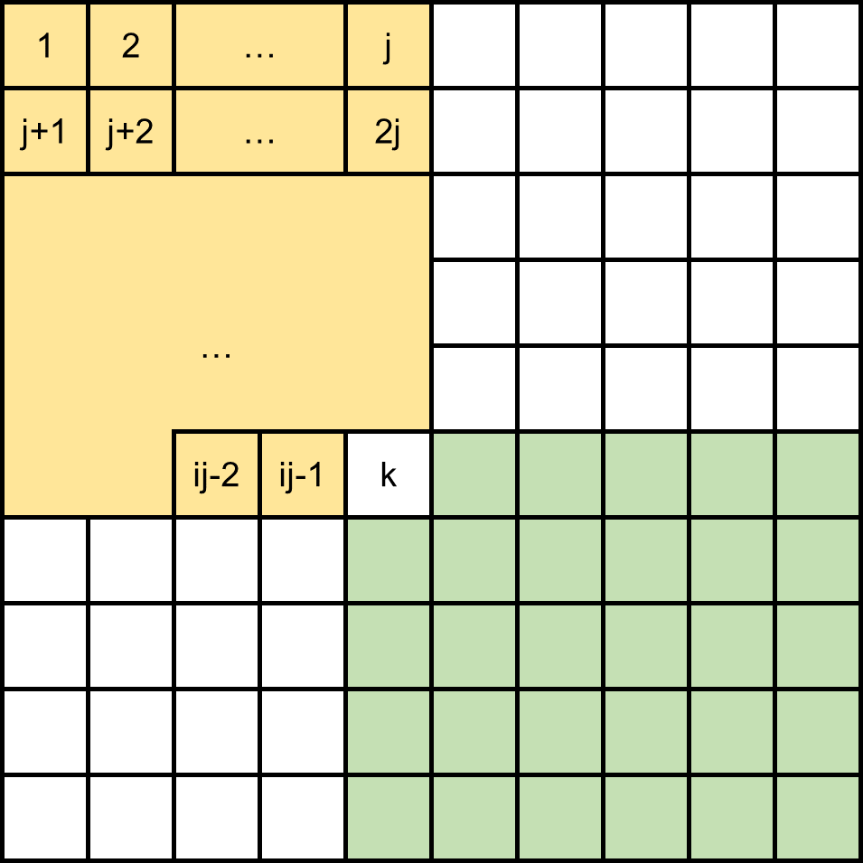

In this problem, you're presented with a table consisting of n×m blocks, where you need to insert n×mdistinct numbers. The following conditions must be met:
Each column is sorted. For every block (i,j) where i>1, the value of (i−1,j) is strictly less than (i,j).
Each row is sorted. For every block (i,j) where j>1, the value of (i,j−1) is strictly less than (i,j).
In essence, when the table is filled with numbers, it should conform to the constraints of a Young tableau.
The problem requires you to determine the sum of ∑1≤i≤n;1≤j≤mf(i,j), where f(i,j) represents whether a method exists to fill the table such that k is positioned at (i,j), with 1 signifying 'True' and 0 'False'.
Initially, we can identify a property that will assist us in resolving this problem for any filling method T:
a≤c∧b≤d⟹T(a,b)≤T(c,d)
For any two blocks (a,b) and (c,d), if block (a,b) is situated in the upper-left corner relative to (c,d), then the value of (a,b) should be less than or equal to (c,d).
Figure 1: (a,b) is at the upper-left conner of (c,d)
Let's analyze a simple case: (m,n,k)=(3,3,5), and consider what the answer might be.
Suppose we position k in a certain (i,j) and assess whether it's possible to fill the table under this circumstance.
(i,j)=(3,2)
After some try, you may discover that it's impossible to fill.
Because we found there's 5 blocks need to have a number smaller than 5, but we only have 4 distinct value smaller than 5.

Figure 2: (i,j)=(3,2)
(i,j)=(1,2)
Similar to the case above, it's impossible to find a fill method in this case.
Because there's 5 blocks need to have a number greater than 5, but we only have 4 distinct value greater then 5.
Figure 3: (i,j)=(1,2)
After experimenting, you might realize that filling is unfeasible in some scenarios because there are either too few numbers smaller or larger than k for the required blocks.
To generalize the observation, we contemplate a fixed (i,j) and recognize the constraints for the numbers surrounding it, ensuring there are enough smaller or larger numbers.
Upper-left conner of (i,j)
Blocks which value must smaller than T(i,j) is ij−1.
Numbers smaller than k is k−1.
Therefore, for k to be placed at (i,j), we must have k−1≥ij−1.
Bottom-right conner of (i,j)
Blocks which value must greater than T(i,j) is (n−i+1)(m−j+1)−1.
Numbers greater than k is mn−k.
Therefore, for k to be placed at (i,j), we must have mn−k≥(n−i+1)(m−j+1)−1.
After some try, you may find that we can only use these two inequalities to validate that number k can or can not be placed on (i,j). But is these two inequality really enough?
Let's consider a general way to fill when both inequality holds.
If both inequalities hold, a standard method for filling emerges, suggesting not to waste numbers and fill the upper left and bottom right corners first, followed by the remaining spaces.
Step 1
Step 2
Step 3
Step 1: fill the upper-left conner of (i,j) with [1,ij−1].
Step 2: fill the bottom-right conner of (i,j) with [mn−(n−i+1)(m−j+1)+2,mn]
Step 3: fill the remaining part with the remaining numbers.
Since both of the inequality holds, there must have enough numbers for Step 1 and Step 2 to fill in.
And since the remaining numbers is greater than ij−1 and is less than mn−(n−i+1)(m−j+1)+2,
there's no need to consider the border of left upper part (yellow part) and right bottom part (green part).
Only need to fill these numbers into remain part one by one.
For this subtask, we can traverse all blocks and employ the mentioned inequalities to validate each (i,j).
The time complexity here is O(mn), allowing us to score 30 points.
The subsequent strategy involves determining the answer for each row i by adjusting the inequalities slightly, thus finding the range of j for row i.
k−1≥ij−1⟹j≤ik⟹j≤⌊ik⌋
mn−k≥(n−i+1)(m−j+1)−1⟹j≥m+1−⌊n−i+1mn−k+1⌋
Since we only place the number inside the table, don't forget this condition:
1≤j≤m
Finally, combine all we can get our solution for row i by calculate the number of j:
max(1,m+1−⌊n−i+1mn−k+1⌋)≤j≤min(m,⌊ik⌋)
This adjustment reduces the time complexity to O(n), since m=n and mn≤1014, we know that n≤107, which is sufficient for scoring 50 points under the conditions of Subtask 2.
Since the time complexity is O(n), it might still get Time Limit Exceeded when n is large enough.
For example, when (n,m)=(1014,1).
However, we note a symmetry in the problem: the answer for (m,n,k)=(a,b,c) is identical to that for (m,n,k)=(b,a,c). Since mn≤1014, there's either m≤107 or n≤107.
This realization means we can swap m and n when m<n, ensuring that our solution's time complexity is now O(min(n,m)), which is adequate for achieving an Accepted verdict for this problem.
Using int will cause overflow in both Subtask 2 and 3, use long long instead.
Number of filling method is the nth number of m-dimension Catalan number, it's a very large number. Consequently, even with substantial pruning, calculating these directly would be prohibitively slow for this problem.
#include <iostream>
using namespace std;
int main()
{
long long n, m, k, ans = 0;
cin >> n >> m >> k;
if (n > m) swap(n, m);
for (int i = 1; i <= n; i++){
ans += min(m, k / i) - max(1LL, (m + 1 - (m * n - k + 1) / (n - i + 1))) + 1;
}
cout << ans << '\n';
return 0;
}